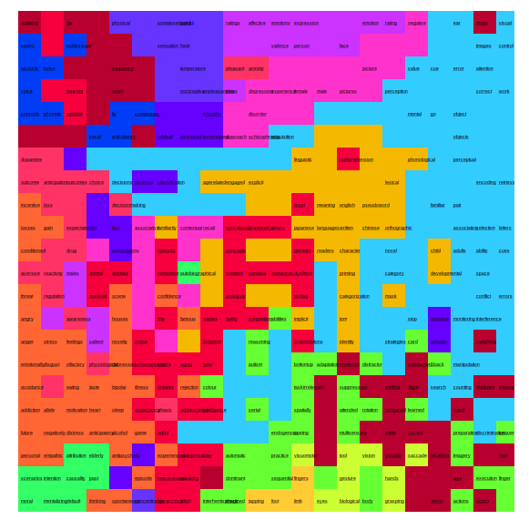
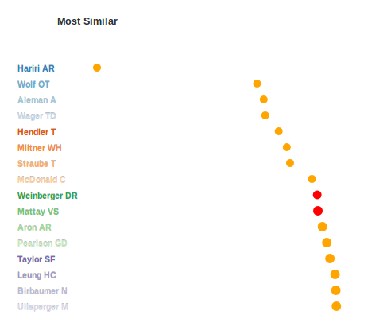
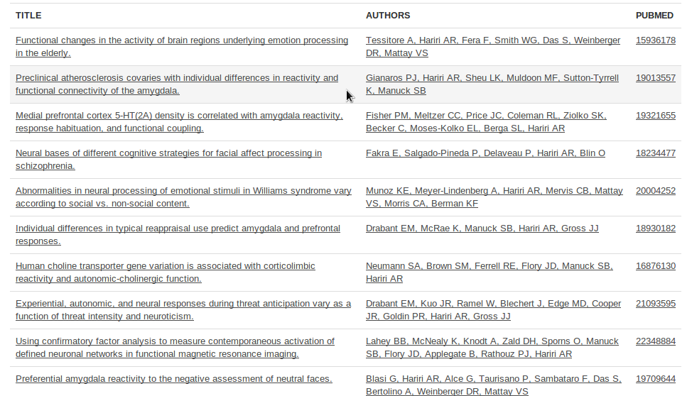
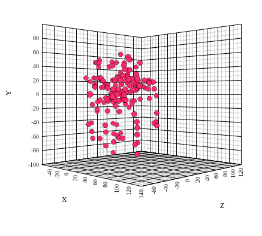

What is AuthorSynth
AuthorSynth is a prototype framework for neuroscience researchers to see and find collaborators. It is a network to show actual collaborations based on co-publication, and a brain lattice to find researchers based on behavioral terms studied. Both of these visualizations lay on top of a database of single author contributions. Read more about the network, the brain lattice, or the single author contributions.
What does the Network show?
The network shows neuroscience author collaboration based on publications in the NeuroSynth database for PIs, defined by being last author on a paper and having at least two publications. Links are defined between PIs with at least 2 publications together. Coloring of the network is determined by similarity based on comparison of actual activation reports (x y z voxel values). The threshold of this coloring can be adjusted to generate more or fewer groups. An actual link represents a real collaboration, while similar coloring represents potential collaborations. Clicking on a link navigates to the single author page.

What does the Brain Lattice show?
The brain lattice is a novel visualization strategy, a self-organizing map (SOM), that maps neuroscience author activation reports to 525 behaviorally relevant terms. You can click on a node in the map to find researchers with published regional activation reports relevant to the term. You will notice that "like" terms cluster together in the map, and the coloring is an arbitrary grouping to show this similarity.

The Single Author Contribution Pages
The single author contribution pages are reachable by clicking on a behavioral term in the brain lattice, or searching for an author in network and clicking on the node. The pages include a single author brain lattice, a ranked collaborator list, and detail about publications and coordinates in the database.
The Single Author Brain Lattice
The single author brain lattice is equivalent in structure to the portal brain lattice, however the coloring of this map represents the similarity of the author's publications to each node, with darker colors corresponding to more highly similar. For example, a researcher with published coordinates relevant to brain areas associated with "motor" in the NeuroSynth database will have "hot" spots on the map around "motor." The map as a whole represents the single researcher's contributions. You can access these pages through the author search page, by clicking a node on the collaborator network, or searching for a behavioral term on the brain lattice.

Ranked Collaborator List
The ranked list of similar authors is determined by finding authors with similar brain lattices, and therefore similar published work (a complete summary of our methods will be provided in a publication). The author in question is at the top of the list, followed by a list of other authors in the database ordered by most to least similar. Next to each author name is a circle plotted along an x-axis that represents the similarity score: circles farther to the right correspond to lower similarity scores. The circles are colored red (indicative of a collaboration), and orange (indicative of no collaboration) so that the user of the interface can quickly assess if the author in question is collaborating with researchers with similar published work. A user of the interface can click on any of these circles to view the “Single Author View” for the author in question.
Publications
The “Single Author View” includes a tab for the author’s publications, including titles, full lists of authors, and links to the articles themselves.
Coordinates
The page also includes a 3D plot of the activation coordinates described in those papers that were used in the analysis.
